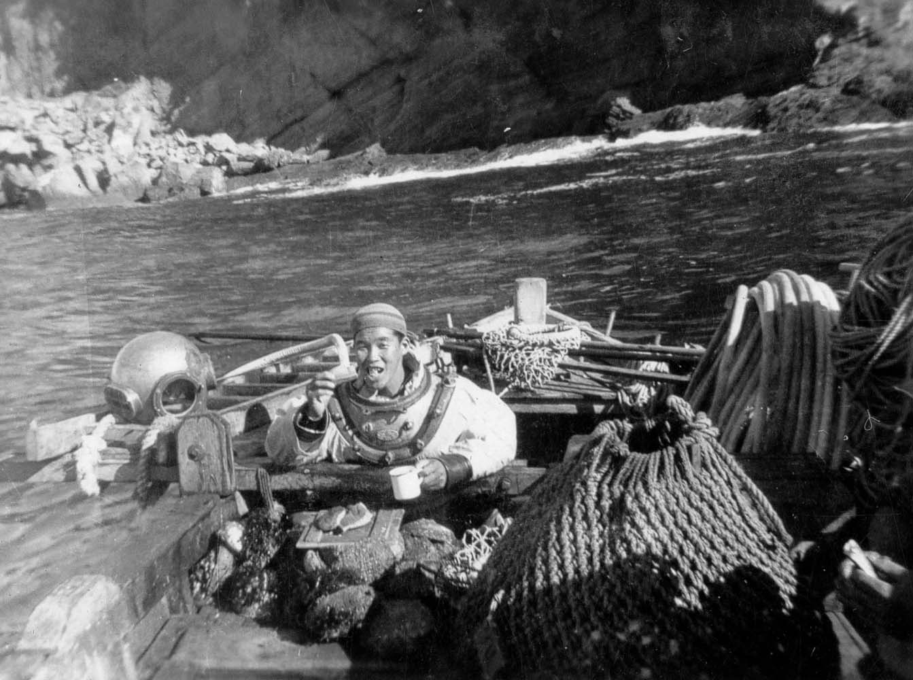

familia

Em uma remota vila de pescadores no Japão, vivia um homem chamado Kaito. Desde jovem, Kaito havia sonhado em explorar o mundo além das águas familiares do Oceano Pacífico. Sua curiosidade e desejo de aventura o levaram a tomar uma decisão ousada: deixar sua terra natal e viajar para o Brasil.
Kaito embarcou em uma longa jornada pelo mar, enfrentando tempestades e desafios ao longo do caminho. Finalmente, após meses de viagem, ele chegou à costa brasileira e se estabeleceu na cidade de Londrina, no estado do Paraná.
Londrina era muito diferente da tranquila vila de pescadores que Kaito deixara para trás. Era uma cidade vibrante, com uma mistura de culturas e oportunidades que Kaito jamais havia imaginado. Determinado a construir uma nova vida para si mesmo, Kaito encontrou trabalho em uma fazenda próxima, onde dedicou-se ao árduo trabalho da agricultura.
Apesar dos desafios de se adaptar a um novo país e a uma nova língua, Kaito encontrou conforto na comunidade japonesa que florescia em Londrina. Ele compartilhou suas histórias de pescaria com os amigos que fez na cidade, encantando-os com os contos de suas aventuras no mar distante.
Com o passar dos anos, Kaito se tornou uma parte querida da comunidade de Londrina. Ele casou-se, teve filhos e viu-os crescerem em uma terra que, embora distante de sua terra natal, agora chamava de lar.
Embora nunca tenha esquecido suas raízes japonesas, Kaito aprendeu a amar o Brasil e a cidade de Londrina como sua segunda casa. Ele continuou a pescar ocasionalmente, sempre lembrando das águas do Oceano Pacífico que um dia deixara para trás. Sua história tornou-se parte do tecido da comunidade, um testemunho da coragem e da determinação daqueles que buscam uma vida melhor em terras estrangeiras.